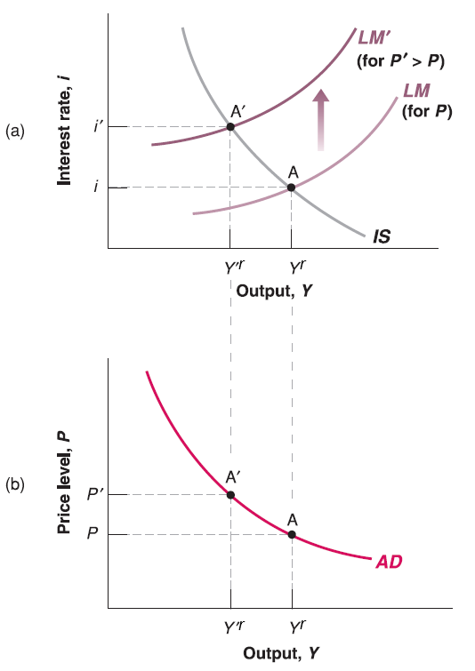

{kind=link}
Aggregate Demand

Mingze Huang
2021-08-04
Recall the policy change effect in IS-LM model, the framework mostly focus on demand side analysis. It enlightens us that we may derive some form of Aggregate Demand (AD) curve from IS-LM model:
\[ \begin{cases} (1 - c_{1})Y^{r} = c_{0}-c_{1}T+I(i)+G & \text{IS relation}\\ \frac{M}{P}=Y^{r}\cdot L(i) & \text{LM relation} \end{cases} \] Since we’ve already got Aggregate Supply (AS) curve on price \(P\) and output \(Y^{r}\). Now our goal is to make an Aggregate Demand (AD) curve on price \(P\) and output \(Y^{r}\) to put on the graph.
In IS-LM model, we assume price level \(P\) is given and unchanged in the short run. Here we can simply relax our assumption to endogenize price \(P\) (e.g. price \(P\) determined inside the model).
Output \(Y^{r}\) has already there as an endogenous variable (determined inside the model), which is good.
There is another endogenous variable: interest rate \(i\), we need to find some way to substitute it away!
(Not required) One way to git rid of \(i\) is to do hardcore mathematical substitution: Rearrange IS relation: \[ I(i) = (1 - c_{1})Y^{r}+c_{1}T-c_{0}-G \] Solving \(i\) by taking inverse function of \(I(\cdot)\): \[ i = I^{-1}((1 - c_{1})Y^{r}+c_{1}T-c_{0}-G) \] Plug it into LM relation: \[ \frac{M}{P}=Y^{r}\cdot L(I^{-1}((1 - c_{1})Y^{r}+c_{1}T-c_{0}-G)) \]
The higher the \(Y^{r}\), the higher the \((1 - c_{1})Y^{r}+c_{1}T-c_{0}-G\) since \(1 - c_{1}>0\) (marginal propensity to consume \(c_{1}<1\)).
Since \(I(\cdot)\) is decreasing function, its inverse function \(I^{-1}(\cdot)\) is decreasing function too. The higher the \((1 - c_{1})Y^{r}+c_{1}T-c_{0}-G\), the lower the \(I^{-1}((1 - c_{1})Y^{r}+c_{1}T-c_{0}-G)\).
Since \(L(\cdot)\) is decreasing function, the lower the \(I^{-1}((1 - c_{1})Y^{r}+c_{1}T-c_{0}-G)\), the higher the \(L(I^{-1}((1 - c_{1})Y^{r}+c_{1}T-c_{0}-G))\).
In summary, the higher \(Y^{r}\), the higher the right hand side of equation since both \(Y^{r}\) and \(L(I^{-1}((1 - c_{1})Y^{r}+c_{1}T-c_{0}-G))\) go higher. To hold the equality, price \(P\) should be lower since nominal money supply \(M\) is given.
(Required) Another way to derive the Aggregate Demand (AD) curve is more intuitive:
Plot IS-LM model.
Change the price level \(P\). Note that in the graph of IS-LM model, the vertical axis is (endogenous variable) interest rate \(i\), not price \(P\)! Price \(P\) is still exogenous variable here. So the change of price level \(P\) should shift LM curve!
See what’s happening on output \(Y^{r}\), this is the way to map the relationship of price \(P\) and output \(Y^{r}\) on a graph with vertical axis \(P\) and horizontal axis \(Y^{r}\).
This curve called Aggregate Demand (AD) curve since it comes from demand side ajustment in IS-LM model.

The intuition goes into IS-LM model:
According to LM relation: \(M=P\cdot Y^{r}\cdot L(i)\). Given nominal money supply \(M\) unchanged, the higher the price level \(P\), the lower the amount of goods consumers can afford. So that demand of goods output \(Y^{r}\) goes down (income \(Y^{r}\) goes down). Also, consumers have less extra money to buy bonds, so bond issuers have to increase interest rate \(i\) to attract buyers.
In short, the higher price level \(P\), the lower output (income \(Y^{r}\)).